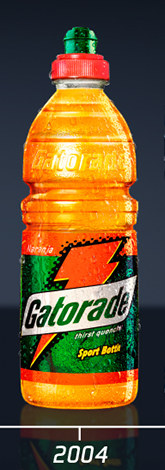

Anteriores

Gatorade foi criado em 1965 por 4 médicos pesquisadores da Universidade da Flórida: Robert Cade, Dana Shires, Harry James Free e Alejandro de Quesada. Isso aconteceu porque o técnico da equipe de futebol americano da universidade (Os Florida Gators), Ray Graves, estava frustrado com o desempenho dos atletas de sua equipe durante jogos no verão. Ele pediu uma solução à equipe do Dr. Cade, que passou a trabalhar no desenvolvimento de uma bebida para a hidratação dos atletas.
A fórmula experimental desenvolvida pela equipe do dr. Cade foi testada pela primeira vez num jogo de futebol americano dos Baby Gators, a equipe de calouros dos Florida Gators, da Universidade da Flórida, em 1 de outubro de 1965, contra a equipe B da universidade. Os Baby Gators, que passaram o jogo inteiro hidratando-se com a nova bebida, venceram o jogo contra a equipa B, que não tinha a bebida. No dia seguinte, foi a vez de testar a bebida com o time principal da universidade. Num jogo contra o favorito LSU Tigers, os Florida Gators venceram por 14 a 7.
A mistura original de água, sais e carboidratos desenvolvida pela equipe do dr. Cade tinha um sabor pouco agradável. Durante os testes com os Florida Gators, para torná-la mais saborosa, os pesquisadores misturaram a bebida com suco de limão. O nome Gatorade surgiu da junção de Gators e da palavra lemonade (limonada), designando a "limonada dos Gators". O nome passou, posteriormente, a ser usado na comercialização da bebida, associando seu desempenho ao do time de futebol americano que utilizava o produto.